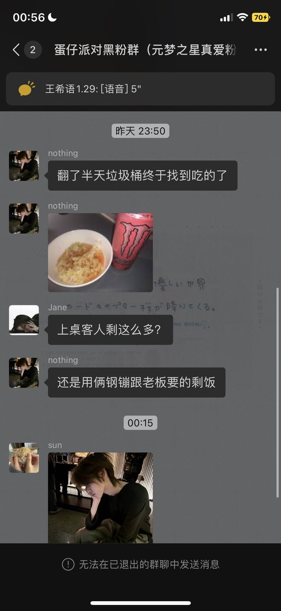
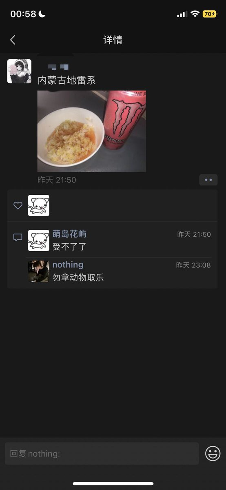
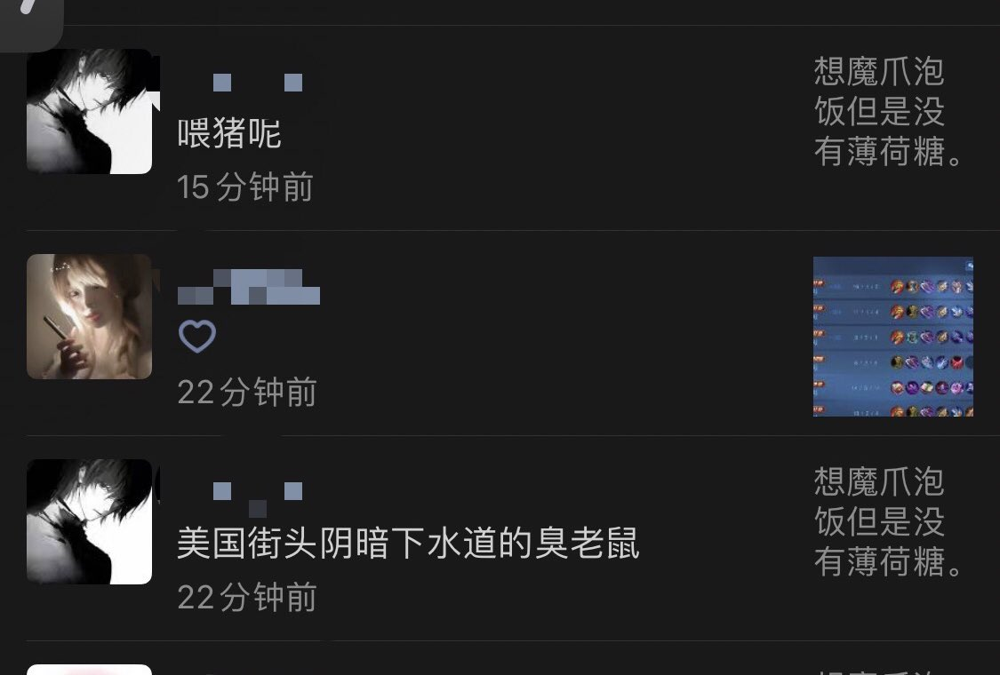

弈鸠ltnh
@Dream_xyuuup
刷了好几个小时的推一回墙内我眼泪一下就出来了我到底怎么你了你这么恨我 你说的话让我不舒服我发朋友圈屏蔽你你去我网友那里贬低我 我明明很讨厌这个绰号我不是老鼠我不是老鼠我都听了三年了从初一到现在谁不是用老鼠称呼我？明明我喜欢的李元芳是一个可爱的鼠非要用我热爱的角色来给我起绰号贬低我吗



弈鸠ltnh
@Dream_xyuuup
现生你他妈有病？ https://t.co/UEKXm92gys